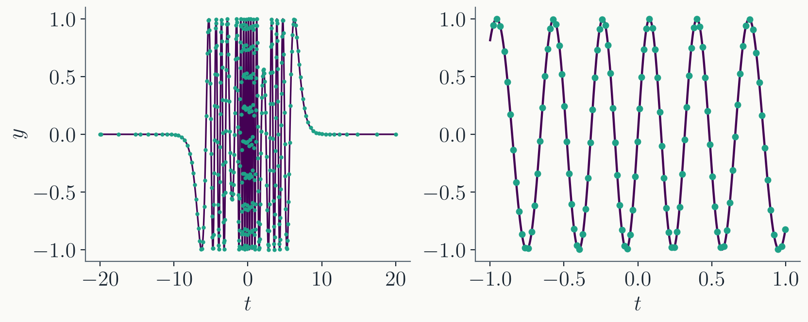
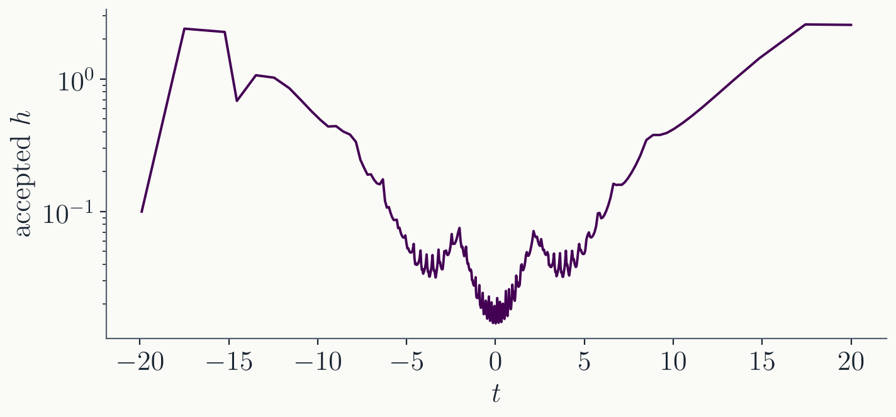
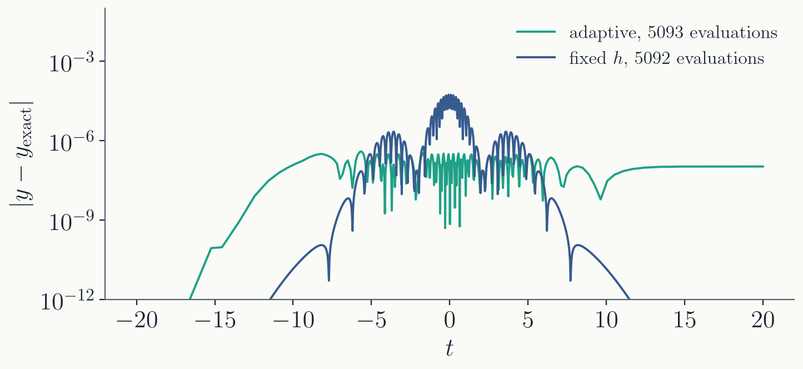

The half-step result is 16 times better;
its true error is roughly $\varepsilon / 15$.
Part II · From error to step size
Choosing $h$ according to estimated error
The control law
Suppose the step just taken gave
error $\varepsilon$, and we want the next one to give
$\varepsilon_\mathrm{target}$. Since $\varepsilon = C h^5$ with
the same $C$ nearby:
$$\frac{\varepsilon_\mathrm{target}}{h'^5} =
\frac{\varepsilon}{h^5}
\quad\Longrightarrow\quad
h' = h \left(\frac{\varepsilon_\mathrm{target}}
{\varepsilon}\right)^{1/5}$$
The same formula works in both
directions: it shrinks $h$ when the step was too coarse, and
grows $h$ when the step was wastefully accurate.
Choosing the target error
We know nothing about $y(t)$ in
advance, so the standard target combines two tolerances:
Pure relative fails when $y$ passes
through zero: the target collapses and no step is small
enough.
Pure absolute fails when you do not know
the scale of $y$ in advance.
Which $y$ goes into the target,
$y^{(1)}$ or $y^{(2)}$? A free choice; they differ only at
the order we are estimating.
Systems: one $h$, many errors
For $N_\mathrm{eq}$ coupled
equations, every component $y_i$ has its own $\varepsilon_i$
and target — but there is only one $h$. Collapse them
into a scalar:
Each term is the error of one component
in units of its own target.
$\mathrm{err} < 1$ means every component
is (on RMS average) within tolerance: the step is good.
The safety factor
In terms of the scalar error, the
update becomes
$$h' = S\, h \left(\frac{1}{\mathrm{err}}\right)^{1/5}$$
$S$ is a safety factor, slightly
below 1; in practice $S = 0.9$ works well.
Why not $S = 1$? The $h^5$ law is only the
leading term. Aiming exactly at $\mathrm{err} = 1$ means half
the steps land just above it.
A rejected step throws away 11
evaluations of $f$. Undershooting the step size by 10% is far
cheaper than rejecting.
The full algorithm
From $(t, y)$, compute $y^{(1)}$ (one step
of $h$) and $y^{(2)}$ (two steps of $h/2$).
For each component, form $\varepsilon_i =
|y_i^{(1)} - y_i^{(2)}|$ and $\varepsilon_{\mathrm{target},i}
= \epsilon_\mathrm{abs} + \epsilon_\mathrm{rel}\,
|y_i|$.
Combine into the scalar $\mathrm{err}$
(previous slide).
If $\mathrm{err} < 1$: accept, advance
$t \to t + h$ with $y^{(2)}$. Otherwise: reject, stay at
$t$.
Either way, set $h' = S\, h\,
(\mathrm{err})^{-1/5}$ and continue. After an accepted step
this usually grows $h$.
Rejections are not failures — they
are the controller braking when the solution speeds up.
Practical refinements
Do not grow $h$ on the step right after a
rejection; and cap the growth (e.g. at $5\times$) so one
flat stretch cannot fling $h$ to infinity.
An empirically more stable update keeps
some memory of the previous step:
$$h' = S\, h\, (\mathrm{err})^{-0.7/5}\,
(\mathrm{err}_\mathrm{prev})^{0.4/5}$$
Use an embedded method to cut the
11 evaluations per trial (Part IV).
Use interpolation to produce output at
regular $t$ values even though the steps are irregular
(dense output — next lecture).
Adaptive RK4 by step doubling, exactly the
algorithm of Part II.
$\epsilon_\mathrm{abs} =
\epsilon_\mathrm{rel} = 10^{-6}$, $\;S = 0.9$, initial
$h = 0.1$, from $t = -20$ to $20$.
The computed solution

Every accepted step is a dot, drawn on the
analytic solution. Right: a zoom into the center of the
burst.
The dots land on the curve everywhere
— and they crowd into the burst and spread out over the
wings.
The step size finds the physics

378 accepted steps, 85 rejected, 5093
evaluations of $f$. The accepted $h$ spans $0.014$ to $2.6$
— a factor of 180.
Nobody told the integrator where the burst
is. The error estimate discovered it.
Was it worth it?

Fixed-step RK4 with the same 5093
evaluations: max error $5\times10^{-5}$, versus
$4\times10^{-7}$ adaptive — 140 times worse.
To match the adaptive error it needs about
19,400 evaluations: 4 times the cost.
Fixed $h$ wastes accuracy in the wings
(error $10^{-10}$ where $10^{-6}$ would do) and still blows the
budget in the burst. Adaptivity spends the error budget
uniformly.
Part IV · Embedded methods
An error estimate for free
The cost of knowing the error
Step doubling pays 11 evaluations per trial, and incur more
evaluations if the step is rejected. The example costed 13.5
evaluations per accepted step against 4 for plain RK4.
The estimate came from comparing two
methods of different accuracy on the same step. But
nothing says the two methods must be built from different
evaluations.
Embedded methods: two weighted
averages of the same stages $k_i$, one of
order $p$ and one of order $p - 1$. The error estimate then
costs nothing extra.
An embedded Butcher tableau
An embedded tableau carries two
bottom rows: the step is taken with $b_i$, and the second row
$b_i^*$ gives a lower-order companion.
Seven stages, but the last stage row
equals the $b$ row: $k_7$ of this step is $k_1$ of the next,
a property called FSAL ("first same as last"). Six new
evaluations per accepted step, error estimate included.
This is the default method behind
solve_ivp in scipy.
Cash-Karp 5(4)
Another embedded 5(4) pair, with
friendlier coefficients:
Six stages, no FSAL: all six evaluations
are fresh each step. Developed with semi-stiff problems in
mind; it behaves slightly better than Dormand-Prince
there.
Using an embedded method
Only step 1 of the algorithm
changes:
Compute $y^{(1)}$ and $y^{(2)}$
using one RK4 step of $h$ and two of $h/2$.
Compute $y^{(1)}$
and $y^{(2)}$ from the two bottom rows of the Dormand-Prince
tableau.
Always advance with the 5th-order
$y^{(1)}$; the 4th-order $y^{(2)}$ exists only to be
subtracted.
Everything else — targets, the
scalar $\mathrm{err}$, accept/reject, $h' = S\, h\,
(\mathrm{err})^{-1/5}$ — carries over unchanged.
Adaptive DP45, complete
From $(t, y)$, compute the seven stages
$k_1, \dots, k_7$; form $y^{(1)}$ (row $b$) and $y^{(2)}$
(row $b^*$).